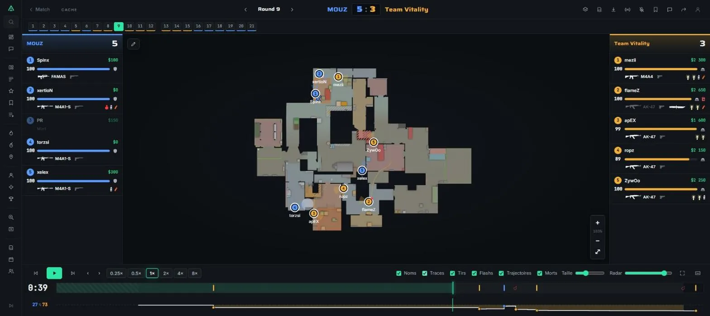
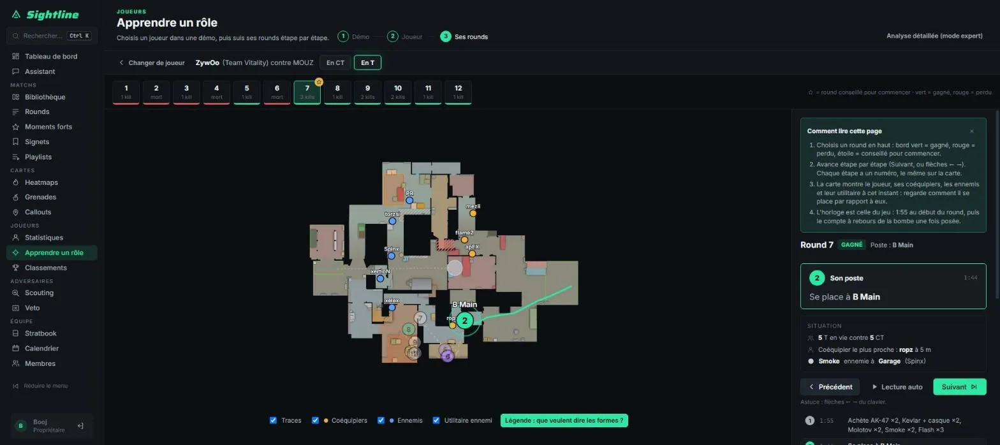
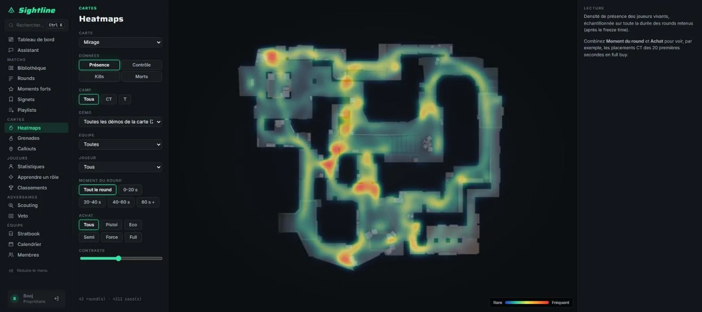
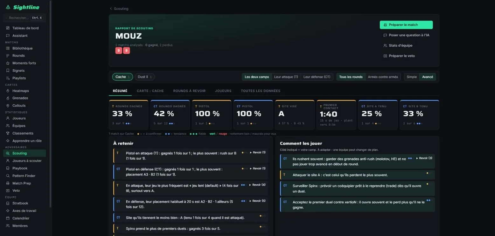
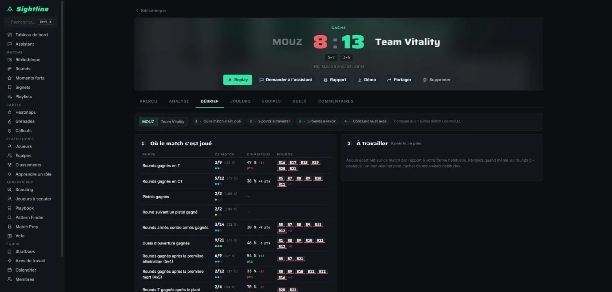
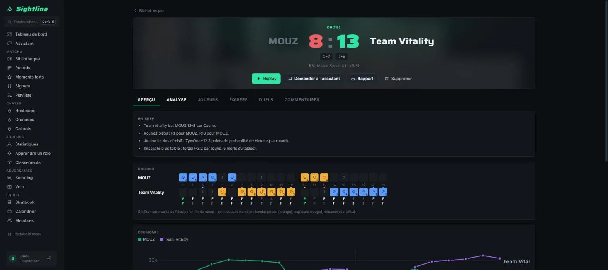

Projet personnel, application web en ligne, construite en pilotant des agents IA
Sightline : analyser un match de Counter‑Strike 2 comme un staff professionnel
Dans Counter-Strike 2, chaque match peut être enregistré dans un fichier de démo qui contient tout : positions, tirs, grenades, argent. Sightline transforme ces fichiers en replay 2D, en statistiques et en outils de préparation pour une équipe. J'en ai construit la première version en trois jours en pilotant des agents IA, puis je l'ai enrichie jusqu'à couvrir l'essentiel d'un outil professionnel : je décide quoi construire et comment le vérifier, les agents écrivent le code.
Le besoin
Pour progresser à Counter-Strike, il faut revoir ses matchs : où étaient les joueurs, pourquoi un round a été perdu, ce que fait l'adversaire d'habitude. Les outils que les équipes utilisent pour cela sont des services en ligne, pour la plupart payants. Je voulais mon propre outil, hébergé sur mon serveur, qui couvre ce besoin de bout en bout : importer une démo, la revoir, l'analyser et préparer le match suivant.
Le vibe coding, avec une méthode
Le vibe coding consiste à décrire en langage naturel ce que l'on veut et à laisser une IA écrire le code. C'est rapide, mais le risque est connu : on finit avec une application que personne ne comprend, pleine d'erreurs invisibles. Mon travail a été d'encadrer ces agents comme on encadre une équipe de développeurs.
- Spécifier avant de coder. Chaque grande partie (import et replay, statistiques, grenades, heatmaps, annotations, espace d'équipe, scouting) a d'abord un document de conception qui fixe le résultat attendu. Avec les audits, cela fait 19 documents.
- Découper et répartir. Dix-huit plans d'implémentation découpent le travail en petites tâches, confiées une à une à des agents, avec une relecture entre chaque tâche.
- Vérifier. 81 fichiers de tests automatiques, des tests sur de vraies démos de match, des parcours complets joués dans un navigateur et des parcours de « bêta-testeur » scriptés.
- Comparer et corriger. J'ai fait inventorier les 57 fonctions d'un outil professionnel du marché, Skybox EDGE, puis découper l'écart en treize sous-projets. Résultat : 42 fonctions couvertes, 11 partielles, 2 absentes, 2 hors de portée (elles demandent des serveurs de jeu). Des audits d'ergonomie et de rapidité suivent chaque grande étape.
- Exploiter. L'application tourne dans un conteneur Docker sur mon serveur, en HTTPS, avec connexion obligatoire et une sauvegarde de la base chaque nuit, conservée 14 jours.
Ce que fait l'application

- Importer un dossier de démos, un fichier glissé dans la fenêtre ou un lien FACEIT.
- Revoir chaque round en 2D, avec les fumées percées par les grenades et les balles, les communications vocales synchronisées et une revue en groupe où un meneur pilote le replay pour tous.
- Analyser la probabilité de victoire round par round, l'économie, les heatmaps, les moments forts (clutchs, multi-kills) et les classements de joueurs.
- Préparer un adversaire : fiche de scouting sur plusieurs démos, rounds à revoir, simulateur de veto avec prédictions, dossier de préparation de match, playbook d'équipe et calendrier.
- Débriefer comme un staff : où le match s'est joué par rapport à la forme habituelle, trois points à travailler, cinq rounds à revoir et des objectifs suivis d'un match à l'autre.
- Apprendre un rôle en suivant un joueur professionnel étape par étape, avec un coach IA qui explique un round, et poser ses questions à un assistant qui lit les données du match sans pouvoir les modifier.
- Comprendre ses erreurs : pour chaque mort, où le joueur regardait au début du duel et s'il avait de l'aide ; les grenades achetées mais jamais lancées ; les rounds lents de l'adversaire découpés en phases. Dans le replay, la liste des grenades d'un round, avec de quoi les rejouer en jeu.
- Être prévenu : notifications d'équipe en direct et sur Discord quand un match est prêt ou commenté.
- Garder Sightline dans la poche : une application mobile pour le joueur, avec les mêmes comptes et les mêmes données.





Rendre l'IA fiable : un rapport de scouting vérifié
Sightline peut rédiger un rapport de scouting sur un adversaire, comme le ferait un analyste. Le risque d'un texte écrit par une IA est connu : elle peut inventer un chiffre ou inverser deux sites avec beaucoup d'aplomb. J'ai donc fait construire le rapport pour que le logiciel calcule les faits, que l'IA ne fasse que rédiger, et que tout soit vérifié avant affichage.
Pour savoir si ce contrôle tient, j'ai fait mesurer ses résultats sur un banc d'essai : des erreurs connues sont injectées dans de vrais rapports (chiffre décalé, pourcentage faux, fait inexistant, sites inversés), et on compte ce qui est attrapé.
- ComptéErreurs de chiffres attrapées par le contrôle automatique : de 81 % à 89-92 % après resserrement des règles, sans aucune fausse alerte sur un rapport intact.
- ComptéErreurs de sens (sites ou joueurs inversés) : le contrôle des nombres n'en voit aucune, le juge en attrape 10 sur 12, pour 2 alertes sur le rapport intact.
| Modèle | Coût par rapport | Durée | Chiffres non justifiés | Remarques du juge |
|---|---|---|---|---|
| Claude Haiku 5.5 | 0,014 à 0,024 $ | 35 à 68 s | 0 | 15 |
| Claude Sonnet 5.5 | 0,15 à 0,36 $ | 19 à 46 s | 0 | 15 |
| Claude Opus 5.5 | 0,63 à 0,89 $ | 63 à 80 s | 0 | 4 |
Décision tirée de la mesure : l'utilisateur choisit le modèle au moment de rédiger. Haiku pour un rapport courant, Opus avant un match important, car c'est celui qui écrit le moins d'erreurs de sens. Le juge relit chaque rapport pour environ un centime. L'évaluation complète a coûté environ 3,20 $.
Résultats vérifiables
- ComptéPlus de 200 commits du 10 au 21 octobre 2026, dans l'historique Git du projet, dont 93 pour la première version en trois jours.
- Compté19 documents de conception et d'audit, et 18 plans d'implémentation.
- Compté81 fichiers de tests automatiques : 49 côté serveur, 17 côté interface, 15 pour l'application mobile. Au dernier passage enregistré, le 20 octobre : 205 tests serveur, 67 tests d'interface et 66 parcours complets dans un navigateur, tous au vert.
- ComptéMesuré pendant la conception sur la bibliothèque de démos (1 840 duels) : le joueur aidé par une flash ou une molotov gagne 63 % de ses duels, contre 47 % pour un duel « à sec ». C'est ce constat que l'analyse des duels met sous les yeux du joueur.
- ConstatéPasse de design sur tout le site : contraste des textes secondaires relevé à au moins 5:1 sur les quatre fonds, et un minimum de 11 px pour les textes de l'interface.
- ConstatéApplication en ligne sur mon serveur, en HTTPS ; sans session ouverte, l'API refuse toute requête, hors connexion et liens de partage publics.
- ConstatéD'après l'historique : import des démos rendu 2,5 fois plus rapide, puis encore 25 % plus rapide à données identiques ; code chargé au démarrage réduit de 105 à 85 Ko.
- ConstatéMesuré en ligne après un audit de rapidité : fiche de scouting de 950 à 250 ms, page joueur de 1 900 à 250 ms ; 250 ms correspond au temps du réseau lui-même.
Ce que je retiens, et les limites
- Mon apport n'est pas la frappe du code. Il est dans la spécification, le découpage, la vérification et l'exploitation. Je sais expliquer l'architecture et chaque choix, pas réciter chaque ligne.
- Une dépendance à surveiller. La lecture des démos repose sur la bibliothèque demoparser2, qui doit suivre chaque mise à jour du jeu. Le code est organisé pour qu'un seul fichier en dépende.
- L'IA garde ses limites. Le contrôle ne voit pas un nombre inventé qui tombe par hasard sur une vraie valeur, et le juge se trompe parfois. C'est pourquoi le texte reste relié à ses faits et les remarques restent visibles.
- Pas de mesure d'usage publiée ici. Les captures d'écran de cette page montrent des matchs professionnels publics, pas les données d'une équipe.